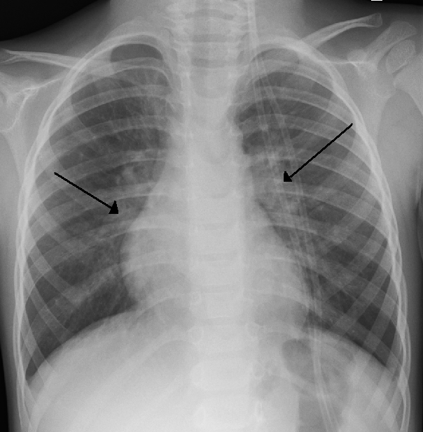

Ficha del catálogo
Bronquiolitis aguda del lactante
- Sistema
- Respiratorio
- Modalidad
- RX
- Región
- Tórax pediátrico
- Dificultad
- Básico
Infección vírica de la vía aérea pequeña, muy frecuente en menores de dos años y con máxima incidencia en los meses fríos. Cursa con tos, sibilancias y dificultad respiratoria. El diagnóstico es clínico y la radiografía solo se reserva para casos graves o con evolución atípica, porque su uso rutinario aumenta el uso innecesario de antibióticos.
Técnica
Radiografía de tórax anteroposterior en el lactante, procurando una inspiración adecuada y una técnica de baja dosis.
Qué observar
- Hiperinsuflación con aplanamiento diafragmático y aumento del diámetro anteroposterior
- Engrosamiento peribronquial con imágenes en anillo alrededor de los bronquios
- Atelectasias laminares y subsegmentarias por tapones de moco
- Ausencia de consolidación lobar franca en la mayoría de los casos
- Simetría y difusión de los hallazgos
- Descartar complicaciones como neumotórax o consolidación extensa
Hallazgos
Pulmones hiperinsuflados con engrosamiento peribronquial difuso y pequeñas atelectasias, sin consolidación lobar.
Perlas
Las atelectasias por tapón mucoso se confunden con neumonía y llevan a antibióticos innecesarios. Un signo útil es que se desplazan o desaparecen en pocas horas, algo que una consolidación bacteriana no hace.
Diagnóstico diferencial
- Neumonía bacteriana
- Consolidación lobar densa con fiebre alta y reactantes elevados.
- Aspiración de cuerpo extraño
- Atrapamiento aéreo unilateral con inicio súbito y atragantamiento.
- Insuficiencia cardiaca en cardiopatía congénita
- Cardiomegalia con congestión venosa.
Simuladores
- Timo normal prominente
- Espiración que simula infiltrado basal
- Pliegues cutáneos que simulan neumotórax
Por modalidad
- RX
- Uso restringido a casos graves o atípicos
- TC
- Raramente necesaria, reservada a complicaciones
Protocolo
Proyección anteroposterior única con la menor dosis posible, procurando adquirir en inspiración.
Clasificación
Errores frecuentes
- Solicitar radiografía en todo lactante con bronquiolitis típica
- Confundir atelectasias por moco con neumonía y prescribir antibióticos
- Interpretar el timo normal como una masa mediastínica

bronquiolitis lactante hiperinsuflacion atelectasia peribronquial virus pediatria